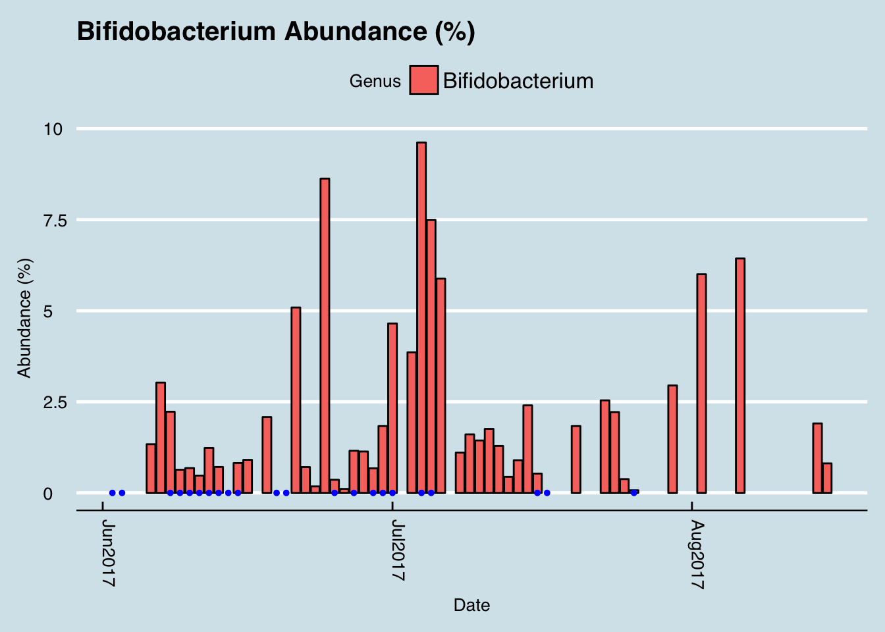

Chapter 4 My Experiments
Microbe numbers shift daily in response to your environment, so a single sample won’t give much more than a broad introduction to the basics of your microbiome. To understand the results of a given test, you’ll soon want to compare it to other samples, either from yourself at a different point in time, or to other people. This chapter will give examples for how to do that.
How Kefir changes the microbiome
Experiment 1: Food Can I learn anything if carefully record all the food I ate between two tests a week apart?
Experiment 2: Travel I tested myself before and after a trip to Central America, and while traveling in Mexico. What changed?
Experiment 3: Hacking My Sleep Can I improve my sleep by feeding the right microbes?
Experiment 4: The Dentist What changes before and after my dental checkup?
Experiment 5: Gut Cleanse Let’s go all the way: clear out all the microbes and watch how they grow back.
4.1 How kefir changes the microbiome
If you follow the microbiome at all, you’ll eventually discover the benefits of kefir. Google the phrase “one of the most potent probiotic foods available” and you’ll find kefir in all the top results. A recent BBC documentary that tested people after consuming different types of “gut-friendly” foods found that kefir had by far the biggest effect. My interest piqued when, after my disappointment with kombucha, I spoke with a man who happened to mention his good luck with kefir as a solution to his many gut issues. On a doctor’s recommendation, he tried kefir for a number of years with limited success, until — frustrated with the $3/day expense of buying it at Trader Joe’s — he began making it himself at home. “What a difference!” he claimed.
Let’s jump to the conclusion: I tried it myself and it’s true. I found a very noticeable change in my gut microbiome — the most significant I’ve seen among my many experiments. Look at my levels of Lactococcus, the main genus of microbe known to be found in kefir:

You’ll note that I had none of this microbe until late January, when I started to drink kefir. The two dips after that, one in mid-March and another in early-April, coincide with trips out of town when I was not able to drink my kefir regularly.
So it apparently has a big effect on the microbiome. What is this stuff anyway?
The first thing to know about kefir is the pronunciation. Say “Keh-FEAR”, with the accent on the second syllable, not “KEE-fur” or “kEH-fir”. The Russian origin of the term is a reminder of a time in the distant past when — it’s unclear exactly where or how — the first batch was prepared and then passed along, its microbial components shared from person to person until it reached today’s status as a popular drink you can buy in most grocery stores.
Making it at home brings more benefits than just saving money. Commercially-purchased drinks are subject to unavoidable regulatory, shelf-life, and consistency contraints that are important for business. But more than that, if you believe like I do that microbes are highly-customized to our environments, making at home will ensure that the kefir is well-adapted to your own personal microbial environment. The batch that survives and thrives in your kitchen will, by definition, have proven its ability to withstand whatever whatever conditions you face there.
Making it yourself is surprisingly easy. It begins with a bundle of the component microbes, a cauliflower-shaped substance usually called the “grain” or “seed”. Instruction books often tell you to be careful how you handle the grains, but I find them robust enough that I pick them up with my bare fingers. I drop them into a glass of milk left sitting on the counter overnight and — voila! — twenty four hours later, the liquid has turned into kefir. Pull out the kefir grains from that glass, plop it into another, and you’re all set for tomorrow’s batch. Unlike yogurt, which requires heating and a stable temperature, kefir doesn’t appear to care about how it’s handled, so long as you keep it at room temperature and can wait for twenty four hours. The reaction might vary by a few hours if the room is a bit colder or warmer, but otherwise I find it surprisingly consistent. Just set and forget.
The ease with which the kefir fermentation happens today begs the question of how the very first kefir grains were created. Nobody knows exactly, but there are people who make them from scratch. I haven’t tried this myself, but apparently a goat-hide bag filled with pasteurized milk and the intestinal flora of a sheep will do, so long as you shake every hour and maintain a constant temperature.
Even without going the goat-hide route, I found that getting started was the only hard part of the process. You can order some starter grains online for under $25, but to survive shipping the manufacturers generally give them to you in a freeze-dried form that requires a week or so of preparation before the microbes are fully alive and kicking out drinkable quantities of kefir.
I got mine by asking around until I found a neighbor who had been brewing his own. Anyone who makes homemade kefir will be happy to give you some extra grains. The fermentation process causes the grains to multiply, and you will find yourself throwing them out regularly.
The grains themselves contain a combination of lactic acid bacteria (Lactobacillus, Lactococcus, Leuconostoc), acetic acid bacteria, and yeast, clumped together with casein (milk proteins) and complex sugars in a matrix of a unique polysaccharide called Kefiran. The nutritional content apparently varies depending on fermentation time and other factors, but there’s a lot of good stuff in there. One study shows the following:

A rigorous microbial analysis by an Irish lab recently showed precisely which microbes are present in kefir, at various stages in the fermentation process. This chart shows the composition of ordinary pasteurized milk as it changes from before adding kefir grains (time 0 at the bottom) until 24 hours have passed (top) and the milk has been transformed into just Acetobacter, Lactobacillus, and Leuconostoc.

The uBiome test looks only at the 16S ribosomal gene, which unfortunately can’t detect yeasts, so I don’t have an easy way to track the yeasts in the kefir.
4.2 Traveling in Mexico
Here’s another trip, this time to Mexico. Let’s start with the conclusions:
- My microbiome changed noticeably during my trip, but it bounced back in a few weeks.
- My diversity went up, as you’d expect, as did levels of one particular phylum, Proteobacteria that seems in me to indicate that my body is fighting invaders.
- Science still knows precious little about the microbiome, though we continue to learn.
People are not the only foreigners you meet when you visit another country. Trillions of new microbes, mostly bacteria, will meet you as soon as you cross the border, and many of them won’t get along with the trillions that already inhabit your body. Upon my arrival, I soon learned fortunately, that Mexican microbes are pretty friendly, and with all the tasty food down there, they’re lucky too.
“Montezuma’s revenge” is the popular name given to Traveler’s diarrhea, apparently because somebody got sick in Mexico long ago and decided to pin the blame on the Aztec emperor who was killed by the Conquistador Hernán Cortés in 1520. Whatever you call it, studies show up to 50% of international travelers suffer some trouble, and about 80% of the time the culprit is a bacterium.
Mexico City has become a serious foodie capital. If you haven’t been there recently, many seasoned travelers suggest you check it again because there has been quite a boom in fine restaurants with tasty dishes from around the world. We ate everything, from queso oaxaca at Mercado de San Juan, to the grasshopper-like insect delicacy ( 60 pesos/100g) chapulines, to the wonderful buttery-tasting fruit called cherimoya.
My favorite drink was pulque, a fermented concoction made from the sap of the maguey (agave) plant. Unlike other fermented beverages like kombucha or beer, the fermentation takes place inside the plant, before harvesting. The plants take more than a decade to mature, and when they start to produce, you have to suck out the pulque quickly or it goes bad. Nobody’s figured out how to preserve it without losing flavor and potency, so unfortunately I’m not able to get any in the U.S.

I loved the food, but what about my microbes? To find out, I tested myself with uBiome gut kits before leaving, immediately at the end of the trip (‘during’), and then a few weeks later. Here’s the highest level (phylum) summary of the most common bacteria I found:
| Phylum | Before | During | After |
|---|---|---|---|
| Firmicutes | 74.71% | 67.03% | 70.47% |
| Bacteroidetes | 21.09% | 21.93% | 24.04% |
| Verrucomicrobia | 0.30% | 5.69% | 1.26% |
| Proteobacteria | 0.99% | 3.14% | 0.49% |
| Actinobacteria | 2.62% | 1.57% | 2.46% |
The first thing to notice is the contrast between my microbiome during the trip versus otherwise. Before and after, my gut is normally dominated by the top two phyla, with nothing else breaking higher than 2%, but during the trip the abundances are more evenly spread. In other words, the diversity increased, as you can see in this picture of the changes in my “inverse simpson” diversity metric:

It makes sense that diversity would increase on a trip, but what can I learn about the bacteria that changed?
Notice how a key one, Proteobacteria, spiked during my trip and then returned to normal after I returned home. I saw the same spike after my jungle trip, during my gut cleanse experiment, and once before when I had been fighting an upset stomach. My experience is consistent with a similar observation by Duke University’s Lawrence David26 and collaborators, who found that this phylum seems to increase during episodes when the gut is under attack, like it is in foreign travel.

Whenever I see elevated proteobacteria in somebody’s uBiome results, I always ask them if they’ve noticed anything unusual tummy-wise.
Because the uBiome technology is designed for citizen science and not medical purposes, the test won’t tell you if you have common pathogens, like the infamous E. Coli or other nasty ones like Shigella. If you ever suspect an illness, you should immediately see a doctor. We’re not just saying this. By their nature, pathogens are often very similar to benign or even beneficial bacteria, sometimes differing by only a single base pair. If they were too different, evolution would quickly stamp them out. The uBiome test just won’t give you the information you’d need for treatment.
That said, at the bacterial DNA level, the Kluyvera genus is quite similar to interesting bacteria like E. Coli or Shigella, and sure enough, I see that it spiked during my trip. Kluyvera ferments sugars and goes up in people on a ketogenic diet, but in this case I bet I’m seeing evidence of a perhaps some kind of an unwanted invader.

Next, what might I learn if I study just the bacteria that changed the most ? To do that, I made a list of just those at the genus level that existed before my trip and after, but not during.
New things I picked up:
Enterococcus
Citrobacter
Methanomassiliicoccus
Flavobacterium
Fastidiosipila
I then compared this to uBiome’s big database, based on tens of thousands of samples. You can find a chart like this on your Insights tab:

Two of these stand out for me: Methanomassiliicoccus and Citrobacter, both of which are rare among uBiome samples and yet they appeared for me just once on a trip to Mexico. Interesting…
I didn’t bother showing the whole uBiome chart, but a little further up the list of uBiome database frequency is Fastidiosipila, which again appeared just this once for me.
Next, let’s look at the organisms that disappeared while I was in Mexico:
Stuff I lost
Turicibacter sanguinis
Candidatus Soleaferrea
Pseudoflavonifractor
Candidatus Stoquefichus
Comparing these to the uBiome database, I see that all of them are pretty common, seen in at least a quarter of all other uBiome users. Again, it’s odd that they disappeared from my uBiome results during the trip.
One of them, Pseudoflavonifractor is associated with successful weight loss. I did gain a few pounds during the trip, but lost it all within a few weeks, maybe because this guy resurrected when I got home?
As for the rest, the obvious question– both for the bacteria that I gained and those I lost: is that good or bad?
The answer, frustratingly, is that we don’t really know, but here are some obvious questions for follow-up:
Are these bacteria somehow associated with Mexico? Like other organisms, some bacteria seem to be native to some geographies and some aren’t. Maybe I’ve stumbled upon a few that happen to enjoy the climate there.
I never became sick during my trip. Did some of these new bacteria protect me somehow? If so, what specifically might I do next time to ensure that I can get them again?
Few of the bacteria I gained seem to stick around, but I know from past experience living in another country that it does seem possible to make permanent changes. Many people who live for extended periods in Japan, for example, seem to carry a bacterium that’s good at digesting sushi. Maybe there’s a similar one for Mexican food?
What about the fermented pulque? Is there some specific health benefit I enjoyed by drinking something that thousands of years of tradition says is good for me? Perhaps with more data we can identify exactly which microbes thrive on this stuff.
As a citizen scientist, my purpose isn’t to solve these problems right away, but rather to raise new and hopefully interesting questions that others can follow up together. Studying the differences between my own samples is my biggest advantage over “real” scientists, who generally look at anonymous data and rarely have the context to go deep into interesting questions that might not have been apparent at the start of the experiment.
4.3 Do Probiotics Work?
Lots of people take probiotics, thinking that it’s helpful to ingest large amounts of bacteria. Most of the microbes are produced in a manufacturing facility that grows industrial quantities of a few species that have been found in various studies to be helpful for health. But how do you know if the specific one you take is any good for you?
To find out, I tracked my microbiome daily while taking a high quality probiotic according to the manufacturer’s instructions.
Here’s how I did the analysis.
I took a Sound Probiotics pill once per day from October 25 to November 2nd. Whatever it did should have been visible in my gut by the following day. [In all my samples, the notes for each sample apply to the previous day]

Begin by loading the necessary data. I also peek at the data using some handy phyloseq commands
sprague.norm <- sprague.genus.normThe data is still raw, containing the un-processed abundance data from the Illumina sequencer. Because there are differences in the way the DNA from the microbes are read in each sample (called “reads”), the total number of reads can vary significantly from sample to sample. For that reason, we generally don’t compare the absolute abundances found in each sample; instead we calculate the percentages. In the examples below, I’ll use the normalized values taken from the uBiome JSON count_norm field.
Now we’re ready to see much my gut changed while taking probiotics. The most obvious way to check is to look at the overall abundances for the two genera that were in the supplements:
targetGenus <- c("Bifidobacterium","Lactobacillus")
#targetGenus <- c("Bifidobacteriaceae","Lactobacillaceae")4.3.0.1 Plotting
Here are the percentage abundances of the two target genera during the time of the experiment. Remember that I took it on days that are reflected below in the results for all samples from Oct26 to Nov3.
library(ggplot2)
ps.short <- subset_samples(prune_taxa(taxa_sums(sprague.norm)>0,sprague.norm),
Date >= "2016-10-10" & Date < "2016-11-15" &
Site =="gut")
x = which(sample_data(ps.short)$Date == "2016-10-24")
xend = which(sample_data(ps.short)$Date == "2016-11-02")
plot_bar(subset_taxa(ps.short, Genus %in% targetGenus),
fill="Genus",
x="Date") +
annotate("segment",x = as.Date("2016-10-24"), xend = as.Date("2016-11-02"), y = -0.003, yend = -0.003, color = "blue", size = 2)
So my first observation is that the supplement didn’t seem to have much effect on the species it claimed to contain. Now, if you were only seeing one or two of these results, you might think the big spike on October 24 and 25th was caused by the probiotic. It’s possible, but given that the abundances plunged again a day or two later, I’m skeptical. In fact, by the time I ended the experiment on November 2nd, practically none of the bacteria in question were showing up.
That said, it is curious that abundances popped upwards again after I ended the experiment. Maybe in fact my body had adjusted to the new levels of probiotics, and there was some kind of lag effect that pushed the others out of my system as soon as I stopped taking them.
To see how plausible that is, let’s look at a longer time horizon:
ps.long <- subset_samples(prune_taxa(taxa_sums(sprague.norm)>0,sprague.norm),
Date >= "2016-08-15" & # Date < "2016-12-15" &
Site == "gut")
x = which(sample_data(ps.long)$Date == "2016-10-24")
xend = which(sample_data(ps.long)$Date == "2016-11-02")
plot_bar(subset_taxa(ps.long,
Genus %in% targetGenus),
fill="Genus",
x="Date") +
annotate("segment",x = as.Date("2016-10-24"), xend = as.Date("2016-11-02"), y = -0.003, yend = -0.003, color = "blue", size = 2)
Hmmmm, it seems the levels of those particular genera went back down again, and then up a week or two later. Seen from a longer time horizon, in fact, it’s hard to see much effect of the probiotic at all.
Maybe my view of the microbe ecology, hoping to see results in only one or two genera, is too simplistic. We know that the gut is an ecosystem. If you add lots of one type of organism, maybe that affects the abundances and ratios of other microbes, all of whom are in constant competition with one another. Is there a way to tell overall how the microbes are changing?
There is a statistical transformation we can apply, called Principal Coordinates Analysis that works, essentially, by looking at all the abundances together and working out which specific microbes seem to correlate most with the others in any given group of samples. In other words, if two different species tend to go up and down together all the time, i.e. are highly correlated, then let’s assume that they are essentially the same unit and combine them for the analysis. The microbes that don’t seem to correlate at all, should be kept distinct. We’ll combine all these different correlations over and over and pick just the two that seem to matter the absolute most, which we’ll plot on a 2-dimensional graph. This process is called “ordination” and here’s I did it for all my samples:
sprague.norm.ord <- ordinate(sprague.norm, method = "NMDS", distance = "bray")## Square root transformation
## Wisconsin double standardization
## Run 0 stress 0.08219986
## Run 1 stress 0.1107376
## Run 2 stress 0.1520361
## Run 3 stress 0.1530138
## Run 4 stress 0.1537919
## Run 5 stress 0.09146967
## Run 6 stress 0.1112963
## Run 7 stress 0.1412903
## Run 8 stress 0.1511709
## Run 9 stress 0.1520434
## Run 10 stress 0.1254721
## Run 11 stress 0.1539761
## Run 12 stress 0.148341
## Run 13 stress 0.09943895
## Run 14 stress 0.1509867
## Run 15 stress 0.1027437
## Run 16 stress 0.1536349
## Run 17 stress 0.1013396
## Run 18 stress 0.1328043
## Run 19 stress 0.1174653
## Run 20 stress 0.1529252
## *** No convergence -- monoMDS stopping criteria:
## 20: stress ratio > sratmaxplot_ordination(sprague.norm, sprague.norm.ord, color = "Site")Most encouragingly, this chart clearly shows the differences among the microbes measured at each site in my body. See how the microbial signatures seem to cluster with one another?
So I’m confident that, at the high level of being able to distinguish samples by site location, the test is pretty useful. What if I apply the same algorithm to just the gut samples in the time period where I took the probiotics? Here’s the calculation and the resulting ordination chart:
sample_data(sprague.norm)$Experiment <- FALSE
d <- as.character(sample_data(sprague.norm)$Date)
e <- as.character(sample_data(subset_samples(sprague.norm,
Date >= "2016-10-24" & Date < "2016-11-02"
& !is.na(Date)
)
)$Date
)
sample_data(sprague.norm)$Experiment <- d %in% e
sprague.norm.gut.ord <- ordinate(subset_samples(sprague.norm,
Site=="gut" &
Date > "2016-01-01"),
method = "NMDS",
distance = "bray")## Square root transformation
## Wisconsin double standardization
## Run 0 stress 0.1923933
## Run 1 stress 0.1929646
## Run 2 stress 0.1925092
## ... Procrustes: rmse 0.005711736 max resid 0.05434331
## Run 3 stress 0.1925478
## ... Procrustes: rmse 0.006604375 max resid 0.05359942
## Run 4 stress 0.192568
## ... Procrustes: rmse 0.007003017 max resid 0.05772665
## Run 5 stress 0.1954555
## Run 6 stress 0.1952774
## Run 7 stress 0.1925783
## ... Procrustes: rmse 0.007039686 max resid 0.05945573
## Run 8 stress 0.1925058
## ... Procrustes: rmse 0.005637429 max resid 0.05352094
## Run 9 stress 0.192427
## ... Procrustes: rmse 0.004128281 max resid 0.05330757
## Run 10 stress 0.1963293
## Run 11 stress 0.1951234
## Run 12 stress 0.1994867
## Run 13 stress 0.2000358
## Run 14 stress 0.1960862
## Run 15 stress 0.1929935
## Run 16 stress 0.197035
## Run 17 stress 0.1951497
## Run 18 stress 0.1954633
## Run 19 stress 0.1924255
## ... Procrustes: rmse 0.003864988 max resid 0.03834021
## Run 20 stress 0.1973403
## *** No convergence -- monoMDS stopping criteria:
## 2: no. of iterations >= maxit
## 18: stress ratio > sratmaxplot_ordination(sprague.norm,
sprague.norm.gut.ord,
color = "Experiment")
Hmm… that looks pretty random to me.
4.3.0.2 (Tentative) Conclusions and next steps
It is very difficult to say with this analysis that the probiotics had any effect that is detectable by the uBiome Explorer test.
Further analysis required:
Study at each phylogenetic level. The current analysis uses an NMDS distance metric that (apparently) considers the entire phylogeny (Need to confirm that). Would I get a different result if I explicitly look only at Genus or Family level?
Consider other statistical analysis. Although the two strains contained in the probiotic pill don’t appear to cause a change in the gut microbiome results, are there other changes that can be detected statistically. Perhaps there are other taxa that show a significant change.
Other time horizons. Maybe the changes don’t happen immediately. Although at a high level, there doesn’t appear to a noticable lag in the levels of the probiotic strains, perhaps a more sophisticated data transformation would uncover something.
Kombucha
David et al. (2014) http://genomebiology.com/2014/15/7/R89↩